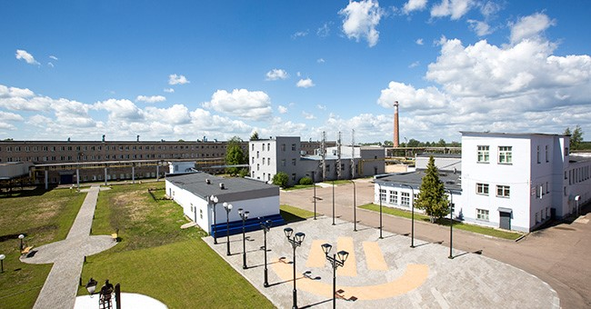
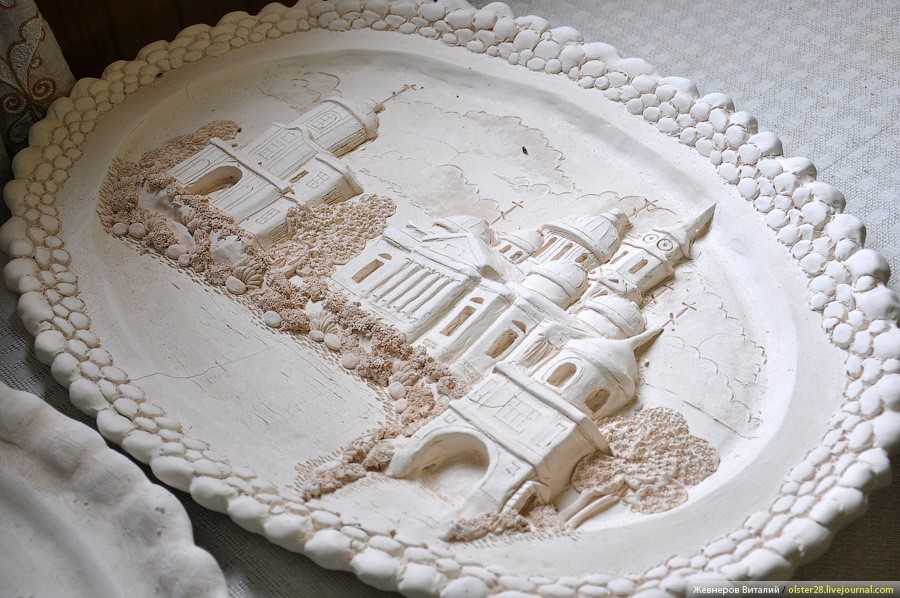
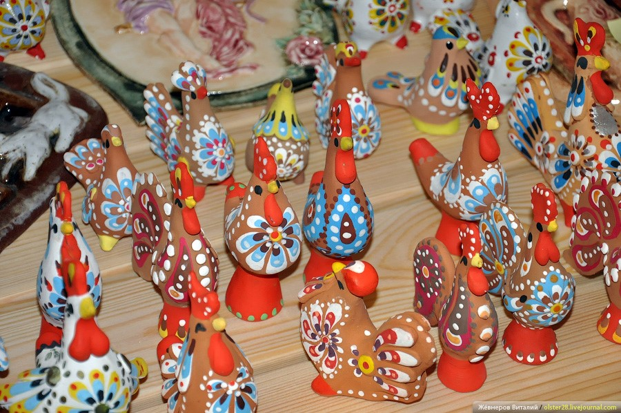
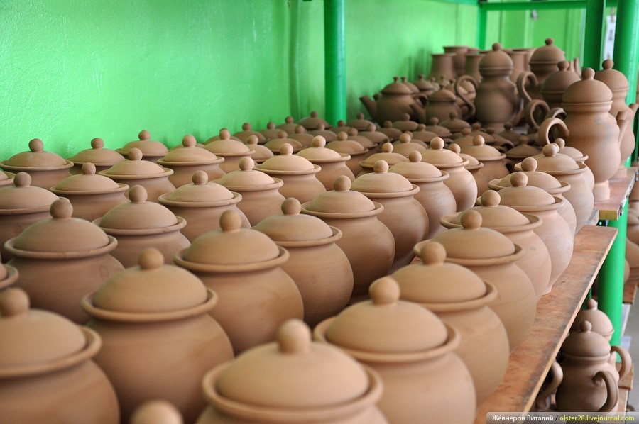
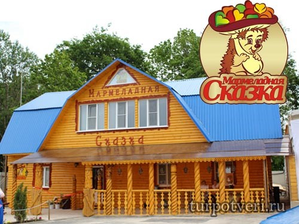
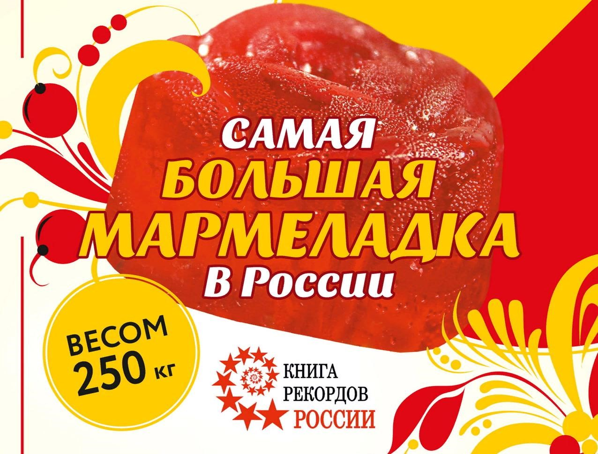
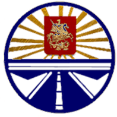
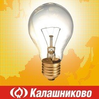
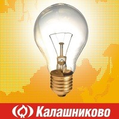
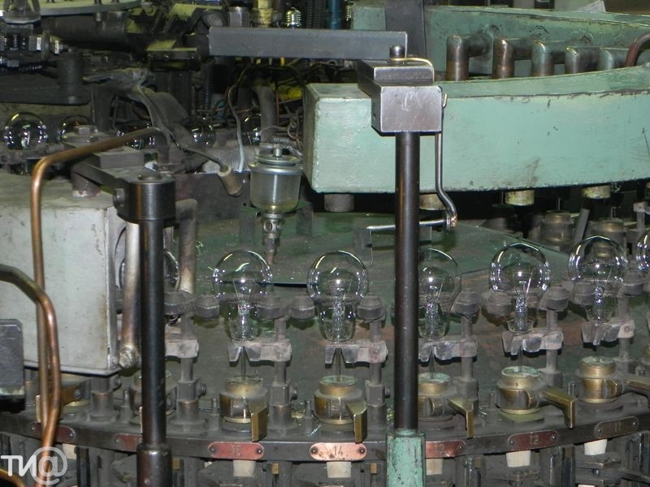

Лихославль
1.ОАО «Лихославльский радиаторный завод»
ОАО «Лихославльский радиаторный завод» является одним из ведущих производителей теплообменников для автомобильной промышленности России. С момента своего основания в 1959 году, завод был единственным специализированным предприятием по выпуску медно-латунных автомобильных радиаторов и отопителей, одним из первых в мире освоил технологию и начал производство паяных алюминиевых радиаторов. Предприятие имеет собственные конструкторские и технологические подразделения, оснащенные испытательные и измерительные лаборатории, способные производить весь комплекс необходимых работ от проектирования до серийного выпуска продукции. В настоящий момент, в рамках очередного проекта управляющей компании «ПРАМОТРОНИК», алюминиевое производство переживает новый этап в своём развитии: создан новый производственный участок для изготовления алюминиевых радиаторов по технологии «ноколок». Использование современных технологий позволяет выпускать алюминиевые радиаторы, лучшие в России, соответствующие требованиям самых жестких мировых стандартов, превосходящие ожидания са¬мых требовательных потребителей.
2.Завод «Светотехника»

Лихославльский завод светотехнических изделий «Светотехника» – ведущий производитель светотехники в России, одно из старейших российских предприятий в своей отрасли, основанное в 1947 году. На сегодняшний день предприятие входит в состав научно производственного объединения GALAD. Предприятие производит светильники и прожекторы практически для любых задач: Уличные (как подвесные, так и консольные) Садово-парковые (торшерные, столбики) Для освещения пешеходных переходов, тоннелей Для освещения жилых домов, офисных и административных зданий Для освещения промышленных объектов Для освещения спортивных объектов Архитектурные и другие. Качество светильников подтверждено многолетней эксплуатацией в сложнейших условиях. «Светотехника» -это светотехнические изделия высочайшего качества и надежности.
3.ЗАО «Художественные промыслы»



Работает более 70 лет, а вообще здешние края издавна были центром гончарного производства в Тверском уезде (с 1853 года). Способствовали этому богатые залежи красной глины. Вся продукция выпускается в исконно русских традициях — чернолощенные и краснолощенные сосуды, горлачи для пива, воды, кваса, масла, различные игрушки, керамические горшки для цветов и свадебные предметы. В Лихославле в 1940 году организовали промышленный комбинат, в котором объединились сразу несколько производств — валяльное, гончарное и столярное. Из местной глины начали производить обычную недорогую посуду, которую декорировали поцарапкой и росписью, придерживаясь национальных традиций. В конце двадцатого века Лихославльский промышленный комбинат был переименован в ЗАО «Художественные промыслы». Сегодня на производстве выпускаются гончарные изделия следующими способами: Способом формовки (миски, цветочные горшки); Способом свободной формовки с использованием гончарного круга (бутылки, подсвечники, вазы, сервизы, бокалы, жбаны и многое другое); Способом литья (изделия фитодизайна, сувенирные изделия, бокалы и т.д.).
4.Компания «Мармеладная сказка» (д. Михайлова Гора)


История производства началась в 2009 году с выпуска всего лишь одного вида мармелада — желейный-формовой фруктовый. Сегодня предприятие выпускает свыше 50 разновидностей мармелада, а покупатели сравнивают эти сладости с мармеладом из прошлого и часто звучат слова — «вкус нашего детства». В 2013 году наградили почетным дипломом победителя Всероссийского конкурса «Сто лучших предприятий и организаций России 2013», в 2014 году присвоены свидетельства о звании «Компания №1 в области промышленности и производства организаций», четырьмя Золотыми и двумя Платиновыми знаками «Всероссийская марка (третье тысячелетие). Знак качества XXI века», так же получены дипломы «Сто лучших товаров России» и вручена международная премия «GOLDEN ESTABLISHMENT». В 2016 году компания «Мармеладная Сказка» стала лауреатом премии «Здоровое питание» и получила звание лучшего Халяль — продукта. «Мармеладная Сказка» - это производство натурального желейного мармелада ручной работы.
5.Кооператив «Дорожник»

Созданный в 1988 году кооператив «Дорожник», а ныне Акционерное общество «Лихославльавтодор», представляет собой высокопрофессиональный коллектив дорожников-строителей, имеющий в своём арсенале новейшую технику и использующий технологии, позволяющие строить современные автомобильные дороги, производить реконструкцию и ремонт улиц городов региона и содержать дороги - словом, выполнять все виды существующих дорожно-строительных и ремонтных работ. В 2007г. за высокое качество дорожного строительства предприятие получило сертификат «Европейский стандарт» и было удостоено почетной номинации «Лидер отрасли» в ежегодной национальной премии «Лидеры экономики России». Значение рода личности не только в истории или реализации современного амбициозного проекта ХХI века, но и для обычного производственного коллектива, задействованного в сфере дорожного строительства, -это всегда фактор, определяющий успех или поражение.На обслуживание АО «Лихославльавтодор» находится свыше 1 400 км дорог по всему Верхневолжью: свыше 450 км дорог в Лихославльском райое и г. Лихославль из них вновь построенных более 250 км , свыше 100 км дорог в других городах Тверской и Московской областях.АО «Лихославльавтодор» принимало активное участие в реконструкции федеральной трассы М-10 Москва-С.Петербург.
6.ОАО Калашниковский электроламповый завод
 

Продукция «Калашниково» более полувека ассоциируется со светом высокого качества и надежности. Основной ассортимент продукции КЭЛЗ включает: лампы накаливания вольфрамовые для бытового и аналогичного общего освещения (стандартные и декоративные), лампы накаливания инфракрасные зеркальные. Калашниковский стекольный завод стал электроламповым заводом в 1950 году. Ранее на нем изготавливались колбы для радио – и осветительных ламп. 15 августа 1949 года Совет Министров СССР принял постановление «О развитии радиолокационной и электровакуумной промышленности». 23 августа 1949 года издан приказ: «Произвести не позднее четвертого квартала 1952 года расширение завода и передать на завод производство нормально - осветительных ламп». Декабрь 1950 года стал поворотным месяцем в истории завода. 11.12.1950 г. была изготовлена первая лампочка.